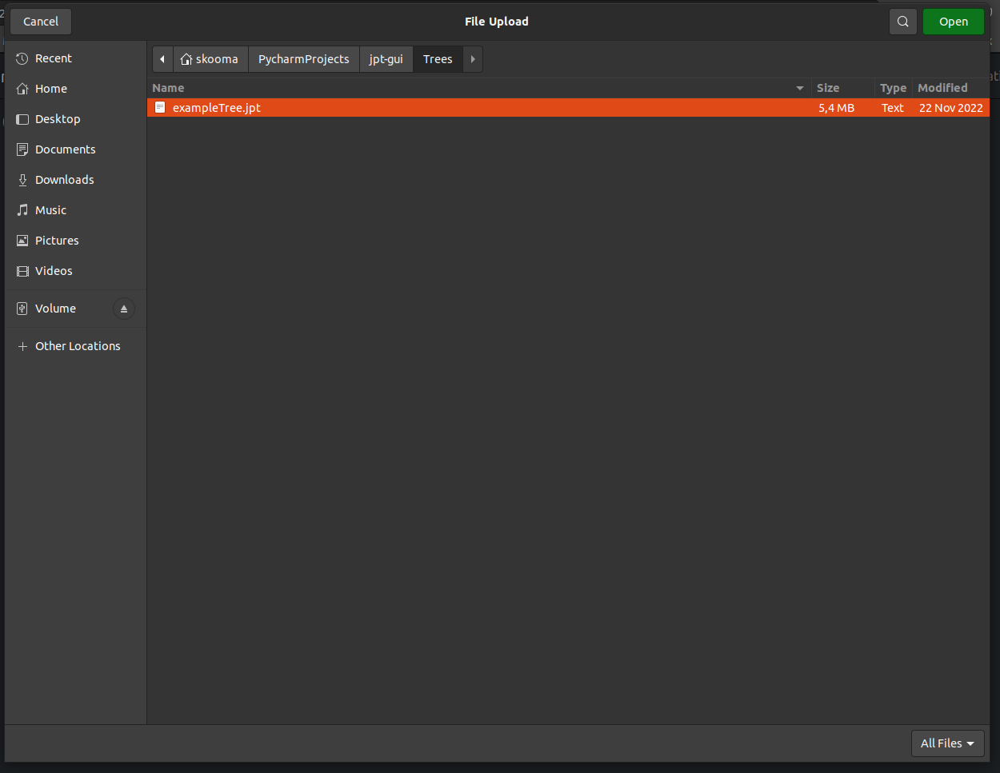

User Guide
With the Navigation, it can be chosen, what Utility to use for the chosen Tree. To load a Tree, see Load Tree. Every Page except the Home Page is split to 2 Inputs, a Query and Evidence. The Query is always on the Left Side and the Evidence is on the Right. The Specific Interaction is readable under the Page Section.
Note
Changeing of Pages resetts all inputs on the Page!
Load Tree
To load a Tree, one need to press the Sampling Button in the Navigational. This opens a File window where one need to open a JPT appropriate file. If a correct File is loaded, the Page will be Reset to the Home page and all made Changes are reset.
Detail Button
Every Time a Variable and its Parameter can be Chosen, there is an Eye-Button. This Button open a Modal in which Paramedics of the Variable is Displayed, and the Input can be Chosen in more detail.

Home
Here is a Display of all Variables in the Tree with their ranges. At the Start before loading is it empty because an Empty Tree is loaded.
Query
The Query Page uses is to find out what Probity a Given Query with a given evidence is. As State on the Left side is the Query Part of the Process and on the Right the Evidence part. With the Press of the =-Button, the Likelihood of the chosen Parameter will be Display under the Button.

Posterior
The Posterior Page Generate Graphs of the chosen parameters. On the Left Side are the Chosen Variables of the Tree that should be considered. On the Right Side is the Evidence Part which value are given. After the =-Button, the Graphs of a Chosen Variable will be shown. This can be swapped with the Left and Right arrow button.

Most Probable Explanation
The MPE Page gives out the values of the Most Probable Explanation of the Chooses parameters. On the Left Side are the Chosen Variables of the Tree that should be considered. On the Right Side is the Evidence Part which value are given. After pressing the =-Button follows the Values of the MPE if there are more than one MPE it can be Swapped with the Right arrow Button and back with the Left arrow Button.